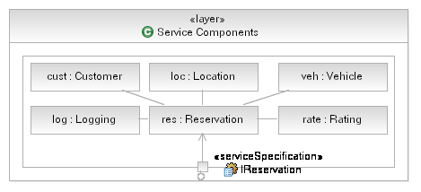

|
Model Component Interfaces
Components, and in particular Service Components, should not provide operations directly, they should instead use
interfaces to describe a set of operations and then provide/realize the interface. This is described in general in
the RUP, see Task: Subsystem Design (SOA) and Task: Identify Design Elements.
Example
In our Rent-a-Car example we have identified (through Subsystem Analysis) the need for a Reservation Service Component.
To ensure a reusable and flexible design we may also create a corresponding Reservation interface, or use the Service
Specification (from Task: Service Specification) to describe the interface to our Service
Component. The Component will realize (in UML terms) each provided interface and may also denote it's dependency on
other component interfaces using the UML usage relationship, as shown in the diagram below.

Note that we have elided the details of the interfaces themselves for clarity.
|
Model Component Attributes
In this step, we will define the details of each service component, including attributes, services, policies, and rules.
The template that is to document Service Component specification will include the following attributes:
-
Properties or Attributes
-
Rules
-
Variations
-
Depends on <other components>
-
Composition of Functional and Technical components
-
Services Provided
-
Services Required
|
Model Component Events and Messages
| During this activity, we identify the events that the component must sense and respond to when they get triggered.
In-coming and out-going component messages are also specified. For services that are driven by changes to data, a
data-centric view must be taken and business processes not within the scope of the service-based solution must be
identified and assessed for generation of events and the supplying of data to the consumer services in the service-oriented
solution. For example, a new client may be added by multiple business processes within an ISV package. In all cases, the
same data may not be captured for the client depending upon the specific context of the business process. Consumer services
that need to be aware of new clients through a provider service need to be able to able to handle the invocation of the new
client service regardless of the business process that generates it. |
Model Component Internal Structure
During this activity, it is important to create at least a class diagram showing the relationships
between the functional and technical components of each service component. Standard UML modeling is applied at this
stage. Use of patterns is encouraged to structure the resulting object graph in a manner that is extensible and open to
changes. If a large degree of change is anticipated, it is recommended to conduct Variability Analysis at this stage.
As described in the previous task, when designing for change, or anticipating significant impact on the design and
structure of IT system as a result of the future business changes, then it is wise to employ the Variability Analysis techniques. These techniques refactor commonality and
externalize variations using design patterns. The commonality and variations discovered earliercan be used as a
starting point and augmented through the use of common design patterns such as Strategy, State [i], Rule Object [ii]
,Type Object, etc.
Analysis done during detailed design identifies commonality and focuses on building pluggable variations and involves
six principles that help separate the changing from the less changing aspects of software systems and isolate and
encapsulate the changes:
-
Separate and model changing from non-changing aspects of the domain: Identify, Separate, Encapsulate and
Externalize Increasing Variations.
-
Create type hierarchies for each variation point.
-
Assign Rule Types to each Variation Type.
-
Implement three-levels of abstraction; use aggregate inheritance meta-pattern.
-
Start from reuse levels higher than objects and Build Assets at each reuse Level; Build Small Frameworks around
Variation Points. In general, each Framework should have no more than 7+-2 classes.
-
Each Reuse Element has its own behaviors. Externalize behavior as configurable data that can be read into the
application to allow soft-wiring.
[i] Erich
Gamma, Richard
Helm, Ralph
Johnson, John
Vlissides, Design Patterns, Addision-Wesley 1994.
[ii] Arsanjani, A., Rule Object: A Pattern Language for Flexible Modeling and Construction of Business Rules,
Washington University Technical Report number: wucs-00-29, Proceedings of the Pattern Languages of Program
Design, 2000.
|
Model Component Flow
During this activity, we identify the internal flow of control within the service component. This can be represented as
a sequence or activity diagram.
ISV Consideration: The Component Internal Flow within an ISV package Component may or may not be exposed and/or
configurable depending upon the package. If objects within the ISV Component are exposed and configurable, their flow
may be tailored and customized to better meet the solution. However, one should be cognizant of any potential ongoing
maintenance issues associated with doing so. In many cases, it will not be possible, nor even necessary, to identify
the Component Internal Flow within an ISV package. In this case, the ISV Component should be considered a "black box",
with only exposed and realized services documented.
|
Allocate Components to Layers
Layering offers the following benefits:
-
Layers help to bring quality attributes of modifiability and portability to an IT system. A change to a lower layer
that does not affect its interface will require no change to a higher layer. For example, any J2EE™ compliant
application server that conforms to the J2EE™ standard may be freely substituted without change to
application-level software. A change to a higher layer that does not affect what facilities it requires from lower
layers will not affect any lower layer. In general, changes to a layered software system that affect no interface
are confined to a single layer.
-
Layers are part of the blueprint role that architecture plays for constructing the system. Knowing the layers in
which their software resides, developers know what services they can rely on in the coding environment. Layers may
define work assignments for development teams (although not always).
-
Layers are part of the communication role played by architecture. In a large system, the number of dependencies
among modules expands rapidly. Organizing the software into layers with interfaces is an important tool to manage
complexity and communicate the structure to developers.
-
Layers help with the analysis role played by architecture. They can be used for analyzing the impact of changes to
the design.
Layering can be strict or non-strict. A strict layering scheme means that components can only use components in the
same layer or layers immediately below them. A non-strict layering scheme means components can use components in the
same or any lower layer. Note that as a general rule, however, components should not be allowed to use
components in upper layers. If components have dependencies on components in higher layers, then it becomes difficult
to replace the upper layer components without having to change the lower layer components. For more information,
including techniques for modeling layers, see Concept: Solution Partitioning.
An important point to note software layers are not the same as tiers. Allocation to machines in a distributed
environment, data flow among elements, and the presence and utilization of communication channels all tend to be
expressed in tier pictures which maybe indiscernible from layer diagrams. Tier diagrams tend to show two-way arrows
indicating bi-directional communication of some sort. Bi-directional (symmetric) communication is bad news in a layer
diagram. Further, assignment of a component to a tier is based on the placement rules considered when defining the
Operational architecture and is defined by the required service level characteristics of the system. The main
difference between layering diagrams and tier pictures is that the former has no notion of placement while the latter
clearly has.
Layering rules-of-thumb
-
All components that provide application-independent business functionality could go in one layer.
Application-independent business functions are things like "customer management" and "product management" that
apply to a range of different applications.
-
All components that provide technical functions, such as error handling, authentication, logging and audit could go
in another (logical) layer. These components are both business and application independent. In some cases,
proximity of technical to functional components may require they be placed in a common layer. These are
architectural decisions and need to be documented as such.
-
Middleware components such as message queuing and relational DBMS software could go in a further layer. This is
also referred to as the "Fabric".
Example
The following is a layered view of an SOA showing typical (and indeed recommended) layers for the different elements
present in a solution.

Now, in this layering scheme it is reasonably simple to realize where our components will reside, we place the relevant
components for our Rent-a-Car example into the Service Components layer, as shown below. Note that we wish
to employ strict layers in our model and so we utilize UML Composition to contain our components in the Service
Component layer and only expose the functionality of the Service Components using delegate ports where the port
provides the same interface as the Service Component itself.

|
|